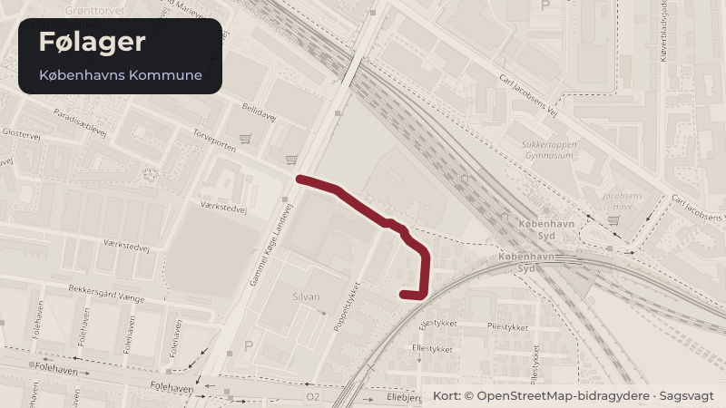

Behandlet 17. september, Borgerrepræsentationen
Kommunal garanti for lån til renovering af almene boliger, Domea København, afd. 3529 - Følager, Valby
Borgerrepræsentationen skal tage stilling til kommunal garanti for lån til ekstraordinære renoveringsarbejder i Domea København, afd. 3529 - Følager. Typisk giver kommunen kun garanti til renoveringsarbejder, som er støttede (typisk af Landsbyggefonden).
Steder i sagen: Følager

Kort fortalt
- Forslaget
- Godkende at kommunen stiller garanti for realkreditlån til finansiering af renovering af familieboliger i den almene boligorganisation Domea København, afd. 3529 - Følager.
- Klima-, Miljø- og Teknikudvalget bemyndiges til at stille den fornødne garanti for lånet inden for rammen på 9.500.000 kr.
- Hvem
- Borgerrepræsentationen
- Hvornår
- Torsdag 17. september 2026
- Status
- Behandlet. Referatet med beslutningen er ikke offentliggjort endnu.
- Næste skridt
- Når Borgerrepræsentationen har godkendt garantiforpligtelsen, vil garantien blive underskrevet og sendt til boligorganisationen.
Sagens vej
- 17. augustKlima-, Miljø- og TeknikudvalgetAnbefalet
- 8. septemberØkonomiudvalgetBesluttet
- 17. septemberBorgerrepræsentationenBehandlet
Læs hele sagen Kommunens egen tekst
Indstilling
om,
• at godkende at kommunen stiller garanti for realkreditlån til finansiering af renovering af familieboliger i den almene boligorganisation Domea København, afd. 3529 - Følager. Kommunen skal garantere for 100 % (9,5 mio. kr.) af et lån på 9,5 mio. kr.,
• at Klima-, Miljø- og Teknikudvalget bemyndiges til at stille den fornødne garanti for lånet inden for rammen på 9.500.000 kr.
Det forudsættes, at eventuelle merudgifter, som følge af sagen, afholdes inden for Klima-, Miljø- og Teknikudvalgets budgetramme.
(Klima-, Miljø- og Teknikudvalget)
Problemstilling
Følager
er et nybyggeri fra 2017. Der er sidenhen konstateret problemer med afdelingens
facader, idet træunderlaget, som facadepladerne er fastgjort til, er i dårlig
stand og med tegn på begyndende nedbrydning og derfor skal udskiftes. Da
afdelingen kun har været i drift i ca. 9 år, er der endnu ikke nogen friværdi i
ejendommen. Det betyder, at et lån uden garanti kun kan være et 20-årigt
banklån, som vil betyde en højere huslejestigning end den som boligselskabet og
afdelingen allerede har godkendt.
Derfor er
der behov for, at kommunen stiller garanti for lån til renovering. Når kommunen
garanterer for et realkreditlån, sikres det, at boligorganisationen kan optage
lån i et realkreditinstitut til forskel fra et banklån. Garantierne stilles med
hjemmel i almenboliglovens § 98, efter hvilken der kan ydes garanti for lån til
ekstraordinære renoveringsarbejder. Normalt gives der ikke garantier til ustøttede arbejder, men almenboliglovens § 98 giver
mulighed for dette, hvis der er særlige udfordringer for afdelingen. Afdelingen
har et højt huslejeniveau og garantien er med til at holde lejen nede.
Realkreditinstituttet vurderer behovet for kommunal garanti bl.a. på baggrund
af tidligere belåning og nettolejen.
Løsning
I
forbindelse med den seneste besigtigelse af facaden, som de rådgivende ingeniører
har foretaget i november 2025, vurderer de, at der er en risiko for, at en
facadeplade potentielt ville kunne rive sig løs i blæsevejr, og anbefalede på
den baggrund, at der i den mellemliggende periode etableres afskærmning de mest
udsatte steder. På den baggrund er der iværksat afværgeforanstaltninger ved
inddækning af udvalgte facader med net, samt lokale overdækninger med stillads.
Efter besigtigelsen har boligorganisationen indhentet beslutninger i
organisationen, udarbejdet en ansøgning til kommunen og kommunen har været i
dialog med boligorganisationen, da der skal være helt særlige grunde til, at
kommunen kan give garanti.
Sagens
samlede budget er på 22,8 mio. kr., hvor 13,3 mio. kr. dækkes af
Byggeskadefonden. Dermed er der en egenbetaling på 9,5 mio. kr. Egenbetalingen
dækker blandt andet over selvrisiko, opbrugt levetid af facadepladerne og
arbejder vedr. brandsikring der ikke dækkes af Byggeskadefonden.
Boligselskabets
økonomi er belastet af flere sager, som kræver ekstraordinære tilskud fra
dispositionsfonden til afdelingerne, så de har kun meget begrænsede midler til
at hjælpe afdelingen i den konkrete sag.
Renoveringsarbejderne
er under gennemførelse. Oplysninger om garantistillelsen fremgår af
nedenstående skema.
Adresse
Følager 7-11, 2500 Valby
Lån, kr.
9.500.000 kr.
Garanti pct.
100 %
Kommunens hæftelse i kr.
9.500.000 kr.
Låntager
Domea
København, afd. 3529
Långiver
Jyske Realkredit
Antal boliger
46 familieboliger
Sagstype
Renovering af almene boliger
Husleje
Afdelingen har allerede en høj husleje på 1.363 kr.m2 pr. år og vil efter
renoveringen være 1.491 kr.m2 pr. år. Dette vil svare til, at en gennemsnitlig
bolig på ca. 101 m2 før renoveringen har en leje på 11.472 kr. månedligt stiger
med 1.077 kr. til 12.549 kr. månedligt. Uden kommunal garantistillelse ville
huslejestigningen være højere endnu.
Politisk handlerum
Det
kan besluttes ikke at godkende garantien. Hvis indstillingen ikke godkendes,
vil det betyde, at Domea København skal optage et lån
til renoveringen ved et banklån, som vil give beboerne en højere husleje.
Økonomi
Garantien
medfører ikke i sig selv bevillingsmæssige konsekvenser for Klima-, Miljø- og
Teknikudvalget. Garantien kommer kun til udbetaling, såfremt
boligafdelingen ikke selv kan betale ydelserne på lånet. Forvaltningen har ikke
på nuværende tidspunkt indikationer på, at garantien vil komme til udbetaling.
Videre proces
Når
Borgerrepræsentationen har godkendt garantiforpligtelsen, vil garantien blive
underskrevet og sendt til boligorganisationen.
Oversigt over politisk behandling
Klima-, Miljø- og Teknikforvaltningen indstiller, at Klima-, Miljø- og Teknikudvalget over for Økonomiudvalget og Borgerrepræsentationen anbefaler,
• at godkende at kommunen stiller garanti for realkreditlån til finansiering af renovering af familieboliger i den almene boligorganisation Domea København, afd. 3529 - Følager. Kommunen skal garantere for 100 % (9,5 mio. kr.) af et lån på 9,5 mio. kr.
• at Klima-, Miljø- og Teknikudvalget bemyndiges til at stille den fornødne garanti for lånet inden for rammen på 9.500.000 kr.
Klima-, Miljø- og Teknikudvalgets beslutning i mødet den 17. august 2026
Indstillingen blev anbefalet over for Økonomiudvalget og Borgerrepræsentationen uden afstemning.
Økonomiforvaltningen indstiller, at Økonomiudvalget oversender sagen til Borgerrepræsentationen med følgende erklæring:
Økonomiudvalget forudsætter, at eventuelle merudgifter, som følge af sagen, afholdes inden for Klima-, Miljø- og Teknikudvalgets budgetramme.
Økonomiudvalgets beslutning i mødet den 8. september 2026
Økonomiudvalget besluttede at oversende indstillingen med udvalgets erklæring til behandling i Borgerrepræsentationen uden afstemning.
Bilag
- Bilag 1 - Overblik over politisk behandling
- Bilag 2 - Faser og lovgrundlag for Almene nybyggeri- og renoveringsprojekter
Kilde: Københavns Kommune, Borgerrepræsentationen, referat fra mødet torsdag 17. september 2026, punkt 12. Læs den originale sag hos kommunen.